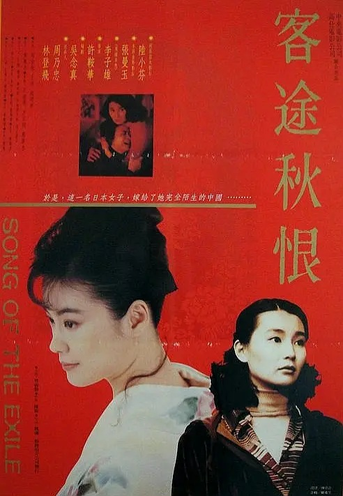
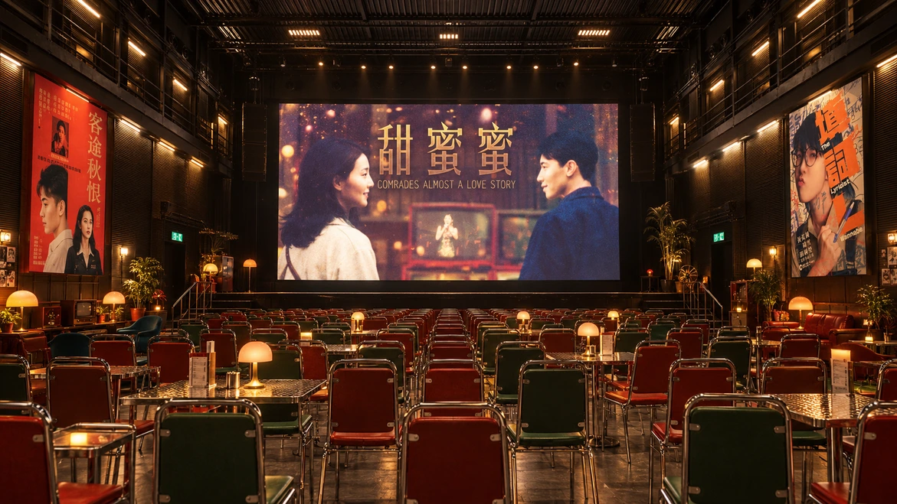
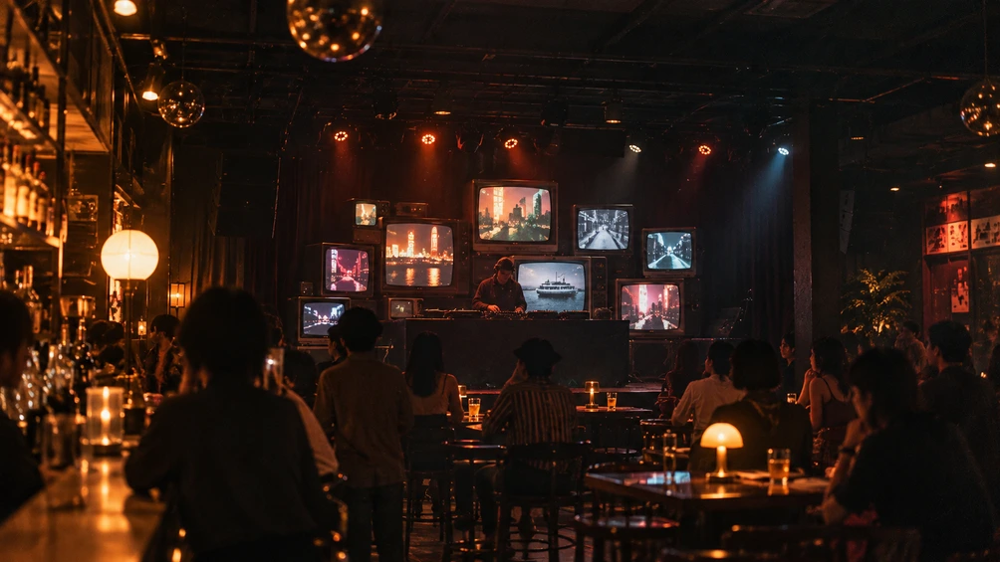
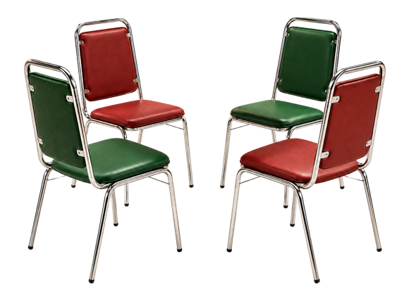
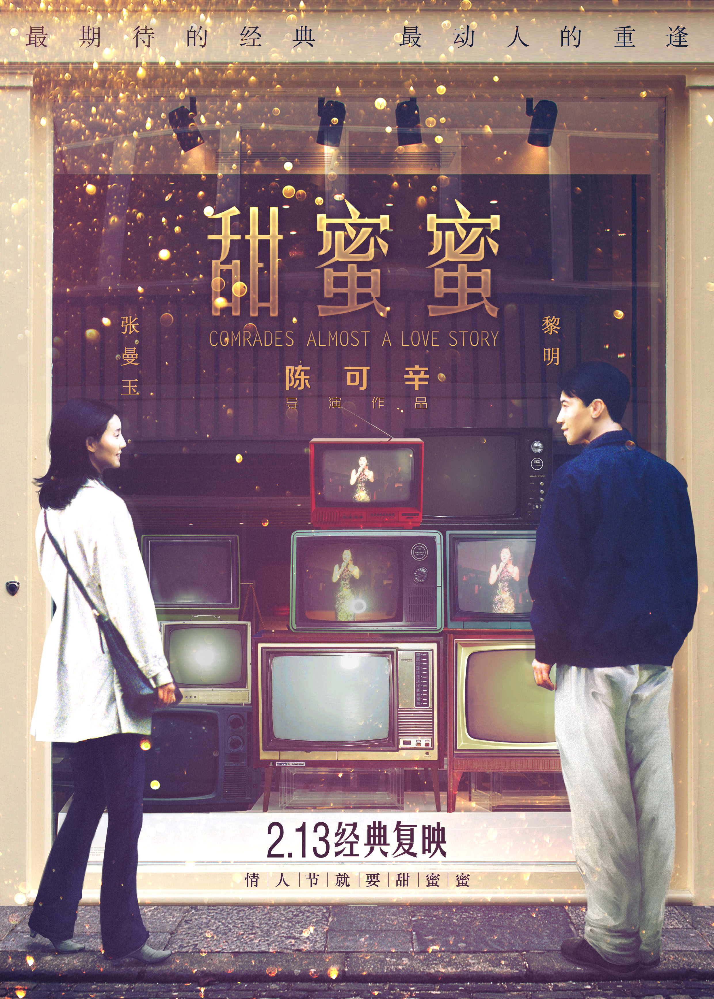
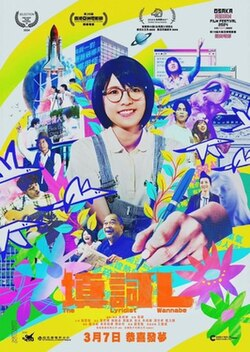
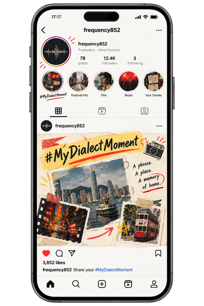
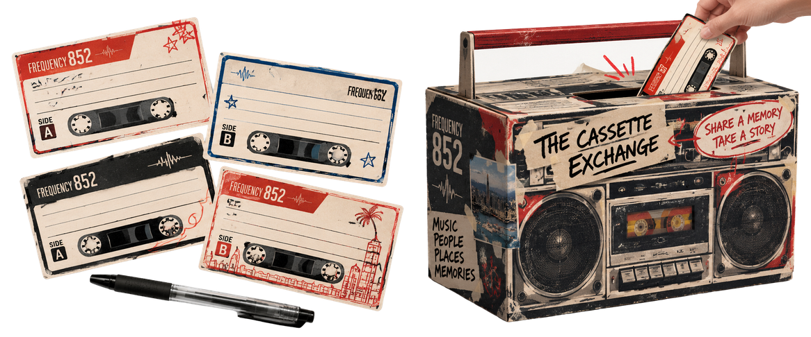

OPENING · 1990Song of the Exile
Ann Hui
＋
Song of the Exile
Ann Hui
Intergenerational distance and language barriers shape a mother and daughter’s understanding of belonging.

FREQUENCY 852 · FESTIVAL TRAILER
CREATOR’S STATEMENT
Named after Hong Kong's +852 dial code, Frequency 852 is a transmedia arts festival blending Cantonese cinema, Cantopop, and installations.
Through transmedia storytelling, I hope to transform private nostalgia into a shared physical experience.
THE CURATORIAL JOURNEY
From witnessing a story to becoming part of it.
Follow the journey: see, hear, then speak.

01 / SEE→THE BOX · FILM SCREENING
Three generations of cinema.
A shared search for home.

02 / HEAR→LAU BAK LIVEHOUSE · LIVE MUSIC
Different eras. Distant cities.
A shared frequency.
THE ROOM · INTERACTIVE INSTALLATION
Every voice is a connection.
Every memory deserves to be heard.
01 — SEE / THE MIGRATING FRAME
THE BOXHow does our sense of home change when language, place and identity no longer align?
Through three generations of Cantonese cinema, this programme explores displacement, cultural belonging and the enduring search for home.

Ann Hui
Intergenerational distance and language barriers shape a mother and daughter’s understanding of belonging.

Peter Chan
Two migrants move from Hong Kong to New York, carrying emotional connections across borders.

Norris Wong
A young songwriter’s pursuit of Cantonese lyrics explores a new generation’s relationship with the language.

02 — HEAR / OFF-SHORE FREQUENCIES
A proposed 30-minute DJ set follows diasporic emotion across three decades. CRT monitors shift from warm, grainy VHS memories to cool, contemporary city streets.
Curatorial setlist · Music playback is not included.
03 — SPEAK / DIAL 852: THE MEMORY LINE
After the screen and the music, the audience becomes the storyteller. A blue-and-ivory telephone booth turns dialling 852 into a connection across borders.
A SMALL GESTURE. A DISTANT CONNECTION.
Dial 8 · 5 · 2, then press → to connect.
Interactive concept preview · No audio is recorded.
A transmedia campaign connects the festival with everyday life, online and offline.

A photo, a familiar phrase, a place that feels like home. Instagram and Rednote invite audiences to share memories of their home dialect. Selected stories are featured with permission.

Leave a memory. Take a stranger’s story. Cassette-shaped cards and a boombox exchange box turn personal recollections into encounters, with consent-based social sharing.
FRAGMENTS TO CARRY HOME
The Room · Merch Store
FROM CONCEPT TO REALISATION
Freespace at WestK is a proposed venue, subject to approval. Capacity, accessibility and audience flow across The Box, Lau Bak Livehouse and The Room would be coordinated with venue operations.
Realisation requires validation of audio playback, recording, protected QR replay and thermal printing. Film, music, archival footage and lyrics require rights clearance. All spatial imagery on this website presents the curatorial concept.
Recording is optional. Public archiving requires separate consent. Protected replay, limited data retention and a clear deletion process are part of the proposed installation. This website’s dial interaction is a visual demonstration and does not collect recordings.